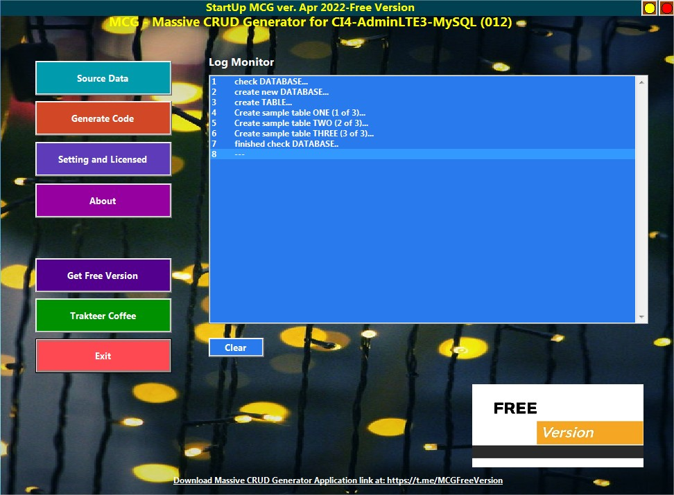

Introduction
About me
Hi, I'm Yudhi from Indonesia,
I'm developing tools to make it easier to make software,
especially software for web development using PHP
Maybe someone wants to try my program.
This program is a kind of tool, which is to speed up the creation of CRUD script files
which repeats itself in the same pattern. Such as View, Add, Edit, Delete, etc.
The results of the CRUD script can be directly used or modified accordingly
with need.
This program is called MCG, which stands for Massive Crud Generator.
Program is my original. Although there may be similarities with similar programs.
Programs are in the form of EXE files and some are free and some are registered.
Whether it's free or registered, the content is the same.
What is registered is a form of your support and as our encouragement.
You can provide support/support/saweran/trakteer as our encouragement
to produce new releases, with no strings attached / certain conditions.
The target of this program is specifically for colleagues who are still learning
script programming such as PHP, although it is possible to
colleagues who are already proficient, or also for colleagues who want to try
I am sharing my knowledge to help make office life a little less annoying ;)
Private message at Telegram: @yudhi_irawanPrivate activity feeds at Instagram: @iam.yudhi_irawan
About Software
MCG - Massive CRUD Generatorfor mcg_005 - mcg_010 - mcg_011 - mcg_012
Created by Yudhi Irawan
Initial created date : Dec 19, 2013
Last update Mar 10, 2022
Download Massive CRUD Generator on telegram and github link
MCG Application:
https://t.me/MCGFreeVersion
Testing:
https://github.com/yudhi-irawan/ci4mcg_testing
Template:
https://github.com/yudhi-irawan/mcg-templates-ci4-lt3
Disclaimer MCG link
English:
https://ko-fi.com/post/004-Disclaimer-J3J4APUYZ
Indonesia:
https://trakteer.id/massivecrudgenerator/post/005-disclaimer-vl3dg#page-menu
Donation and Support link
Ko-fi:
https://ko-fi.com/MassiveCrudGenerator
Trakteer:
https://trakteer.id/MassiveCrudGenerator
Thank you very much if you consider supporting me,
it helps keep things free to use for everyone
Please follow us for information about new releases
Thanks you for using this tool.
Overview and Features
- This tool is an EXE file and runs on the Windows platform 32/64 bit.
- This tool is a tool for programmers to speed up script file creation the pattern is always the same or always repeats.
- This tool will generate a CRUD file of type SQL, especially for MySQL, namely: View, Add, Edit and Delete scripts.
- The resulting script file can be used directly, or it can be edited as needed.
Installation and Runing Program
- Run setup.exe file or extract setup.zip file
- copy extract file to target directory. ex: d:\MCG
-
Run EXE file
System will ask you select option 'Include sample data'
select Yes option if you will try or practice this tool,
or select No option if you no need sample files
Note: Running this tool file will make .ini and generator.db file.

Top Menu
Setting and Licensed
go to 'Setting and Licensed' menu and set what you want.
Directory Output : blank option will save output script same with main program.
Sample setting output mcg_005:

Sample setting output mcg_012:

Register licensed type:
Note:
Envato licensed type is reserved.
Never share your register number to other people.
Top Menu
Make Massive CRUD data
go to 'Source Data' menu.There are 3 sections and you must fill every section.
that sections are Control-Menu, Grid-Menu, and Field-Menu.
Control Menu:
You are required to fill in the name of the file which will be the name of the outputGrid Menu:
You are required to fill in the table name, the table name is used to storefields created in the Field Menu.
Field Menu:
Fieldname must be filled with data, then select the appropriate fieldtype.Each table must have ONE field of type AUTOINC-PRIMARYKEY.
A field of type AUTOINC-PRIMARYKEY is a field of type INTEGER.
For the Attribute field, fill it with HIDDEN if Fieldtype is AUTOINC-PRIMARYKEY.
Example of data entry:
- Data-1
- Control Menu:
- File Name: sex
- Title: Tabel Sex
- Menu Icon: fa-circle
- Menu Folder: TABLE
- Description: Tabel Sex
- Grid Menu:
- Tablename: sex
- Title: sex
- Field Menu:
- Fieldname: sex_id
- Fieldtype: AUTOINC-PRIMARYKEY
- Attribute: HIDDEN
- Title: Sex ID
- Fieldname: sex_desc
- Fieldtype: VARCHAR
- Attribute: NORMAL
- Title: Sex Description
- Validation - Data Is Unique: {"y","Data double."}
- Validation - Data Required: {"y","Data required."}
- Show at Lookup: YES
- Data-2
- Control Menu:
- File Name: edu
- Title: Table Education Level
- Menu Icon: fa-circle
- Menu Folder: TABLE
- Description: Table Education Level
- Grid Menu:
- Tablename: edu
- Title: edu
- Field Menu:
- Fieldname: edu_id
- Fieldtype: AUTOINC-PRIMARYKEY
- Attribute: HIDDEN
- Title: Edu ID
- Fieldname: edu_code
- Fieldtype: VARCHAR
- Attribute: NORMAL
- Title: Edu Code
- Validation - Data Is Unique: {"y","Data double."}
- Validation - Data Required: {"y","Data required."}
- Fieldname: edu_desc
- Fieldtype: VARCHAR
- Attribute: NORMAL
- Title: Edu Description
- Validation - Data Required: {"y","Data required."}
- Show at Lookup: YES
- Data-3
- Control Menu:
- File Name: emp
- Title: Employee
- Menu Icon: fa-circle
- Menu Folder: MASTER
- Description: Employee
- Grid Menu:
- Tablename: emp
- Title: emp
- Field Menu:
- Fieldname: emp_id
- Fieldtype: AUTOINC-PRIMARYKEY
- Attribute: HIDDEN
- Title: Emp ID
- Fieldname: emp_name
- Fieldtype: VARCHAR
- Attribute: NORMAL
- Title: Emp Name
- Show at Lookup: YES
- Fieldname: emp_bday
- Fieldtype: DATE
- Attribute: NORMAL
- Title: Birth Day
- Fieldname: sex_id
- Fieldtype: LOOKUP-COMBO
- Attribute: HIDDEN
- Fieldname: sex_desc
- Fieldtype: RELATION
- Attribute: NORMAL
- Fieldname: edu_code
- Fieldtype: LOOKUP-COMBO
- Attribute: HIDDEN
- Fieldname: edu_desc
- Fieldtype: RELATION
- Attribute: NORMAL
Top Menu
Generate Code
Data will be craeated if no mistake in Source Data. You can see at Log Monitor.Fix your error, and repeat again this proccess.
File result will be created at Directory Output.


Output result to www directory:
Top Menu
How to use SQL script result
- Open your favourite database-tool, create database and called name: mcg_db
- run or copy paste script from result MGC tool: ~merge_table_all.sql
- run or copy paste ~merge_sql_all.sql
There are two ways for testing SQL script from MCG output
- 1. Common command:
INSERT INTO sex (sex_id, sex_desc) VALUES (1, 'Laki-laki'), (2, 'Perempuan'); INSERT INTO edu (edu_id, edu_code, edu_desc) VALUES (1, 'TK', 'Taman Kanak-kanak'), (2, 'SD', 'Sekolah Dasar'), (3, 'SMP', 'Sekolah Menengah Pertama'), (4, 'SMU', 'Sekolah Menengah Umum'), (5, 'UNIV', 'Universitas'); UPDATE sex SET sex_desc='Male' WHERE sex_id=1 DELETE FROM sex WHERE sex_id=1 SELECT sex.sex_id, sex.sex_desc FROM sex
CALL sex_one_add(1, 'Laki-laki'); CALL sex_one_add(2, 'Perempuan'); CALL sex_one_edit(1, 'Male'); CALL sex_one_delete(1); SELECT * from sex_one_view;Note: you must create MySql database and called name: mcg_db
Top MenuFile/Directory Structure Web Server
Structure mcg_005:

Top MenuSamples PHP Code with PDO Connection
This samples use a PDO connection, to enable PDO connection in php.ini file,
you have to uncomment the line becomes:
- extension=pdo_mysql
- extension=pdo_pgsql
Samples at directory mcg_testing
Copy that samples to your webserver at target directory:
httdocs or maybe www
you can call in your browser with:
http://localhost/mcg_testing/mcg_005/sex.php
http://localhost/mcg_testing/mcg_005/edu.php
http://localhost/mcg_testing/mcg_005/emp.php
Note: you must create MySql database and called name: mcg_db
or you can change databasename then set file inc/conn.php
Top Menu
Samples Standard PHP Code
foreach ($rows as $row){
if($row["sex_id"] == null || $row["sex_id"] == "") $row["sex_id"] = "0";
if($row["sex_desc"] == null) $row["sex_desc"] = "";
$sql = "CALL sex_one_edit";
$sql .= " (";
$sql .= ":sex_id";
$sql .= ",:sex_desc";
$sql .= ")";
$rs = $myconn->prepare($sql);
$rs->bindParam(':sex_id', $row['sex_id']);
$rs->bindParam(':sex_desc', $row['sex_desc']);
$rs->execute();
}
Top Menu
Samples PHP Code with Codeigniter 4
- Controllers
public function saveedit_one($id)
{
$arrResult=$this->Sex_model->saveedit_one([
'sex_id' => $id
, 'sex_desc' => $this->request->getVar('sex_desc')
]);
session()->setFlashdata('pesan', 'Data berhasil diubah.');
return redirect()->to('/sex');
}
public function saveedit_one($arrdata)
{
$sql_edit = " CALL Sex_one_edit";
$sql_edit.= " (";
$sql_edit.= "'".$arrdata['sex_id']."'";
$sql_edit.= ",'".$arrdata['sex_desc']."'";
$sql_edit.= ")";
return $this->db->query($sql_edit)->getRowArray();
}
Top Menu
Samples at FREE webhosting
https://mcg-testing.000webhostapp.com/mcg_005/sex.php
https://mcg-testing.000webhostapp.com/mcg_005/edu.php
https://mcg-testing.000webhostapp.com/mcg_005/emp.php
Top Menu Contact me for further assistance
---------------------------------
Telegram: @yudhi_irawan
Please introduce yourself.
Top Menu